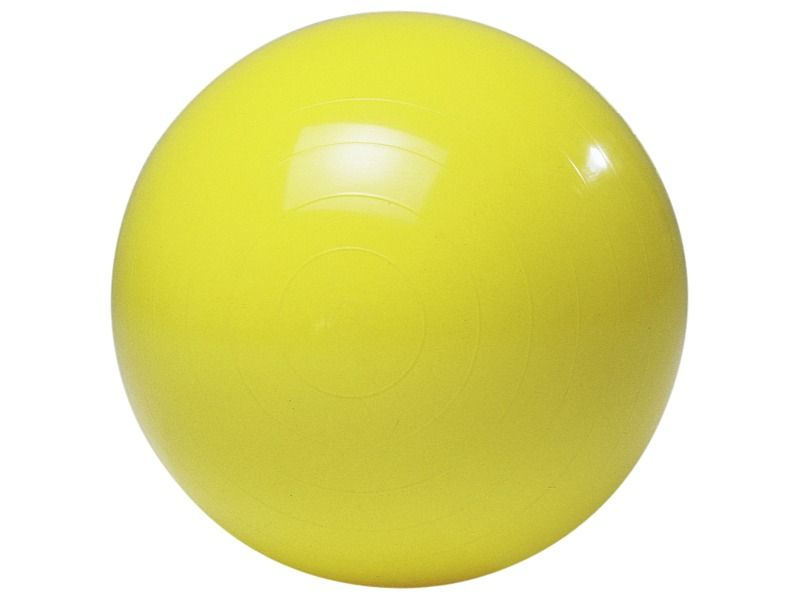

Marcel

Summary
Analytical and quality-focused laboratory technician with more than eight years of experience in pharmaceutical and cosmetic quality control. Skilled in performing chemical and physical analyses according to GMP standards, documenting results in electronic systems, and ensuring compliance with regulatory specifications. Combines hands-on laboratory expertise with strong problem-solving skills, reliability, and a proactive mindset. Currently preparing for a career transition into the field of software and web development, with a focus on Python and modern web technologies.
Education
- 03/2012 – 08/2014 – Hochschule Mannheim
Bachelor Studies in Chemical Engineering (not completed due to personal reasons)
- 09/2011 – 02/2012 – Hochschule Mannheim
Bachelor Studies in Process Engineering (programme change)
Work experience
- 01/2025 – 03/2025 – MEG Kirkel GmbH, Kirkel
Quality Assurance Technician
Conducted product and equipment inspections according to predefined control plans, including chemical-technical analyses.
Monitored beverage production processes and ensured packaging compliance with established standards.
Documented analytical data and recorded results in electronic systems.
- 06/2022 – 12/2024 – Dr. Theiss Naturwaren GmbH, Homburg
Analyst, Quality Control
Performed analyses of pharmaceutical and non-pharmaceutical products.
Conducted stability studies, content analyses (HPLC, GC), organoleptic tests, IR and UV/VIS spectroscopy, titrimetry, and potentiometry.
Ensured accurate documentation and data entry in digital systems.
- 01/2021 – 05/2022 – Boehringer Ingelheim Pharma GmbH & Co. KG, Ingelheim
Analyst, Launch and Lifecycle Department
Supported analytical processes during manufacturing optimization and product changes.
Conducted analytical release testing for new product launches and counterfeit investigations.
Worked under GMP standards; managed documentation, integrity checks, and data verification in SAP, MS Office, and MyLab.
- 10/2016 – 12/2020 – Eurofins Phast GmbH, Homburg
Analyst, Quality Control
Analyzed pharmaceutical products and ensured compliance with quality standards.
Performed precise documentation and entered results into client-specific systems.
- 02/2010 – 08/2011 – BASF SE, Ludwigshafen
Chemical Production Operator
Operated and monitored chemical production plants and processes.
Ensured safe and efficient production according to operational guidelines.
Skills
- Laboratory techniques: HPLC, GC, UV/VIS, IR, titration, potentiometry, organoleptic testing
- Software: SAP, MyLab, MS Office Suite
- Languages: German (native), English (basic, in active development)
- IT focus (in progress): Python, HTML, CSS, JavaScript, Web Development
Other